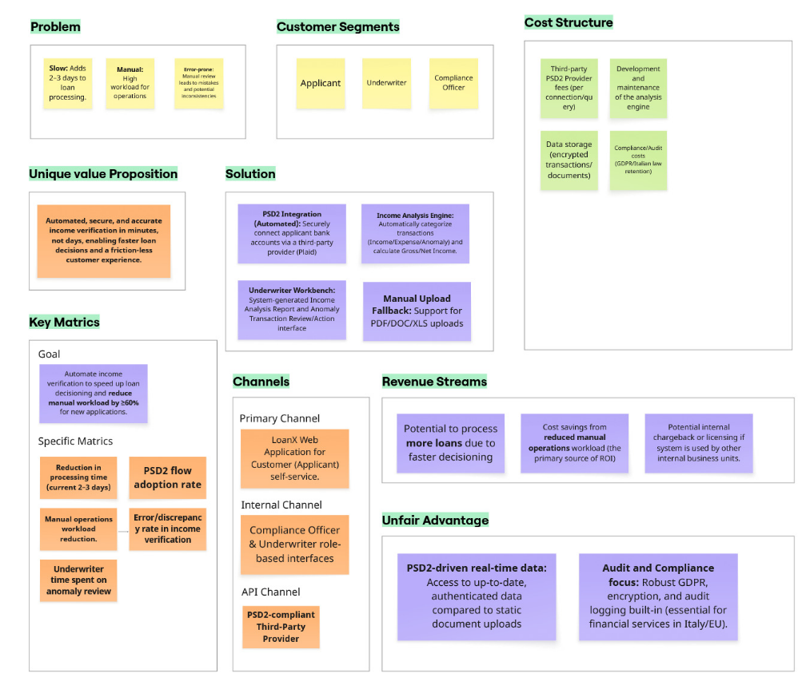
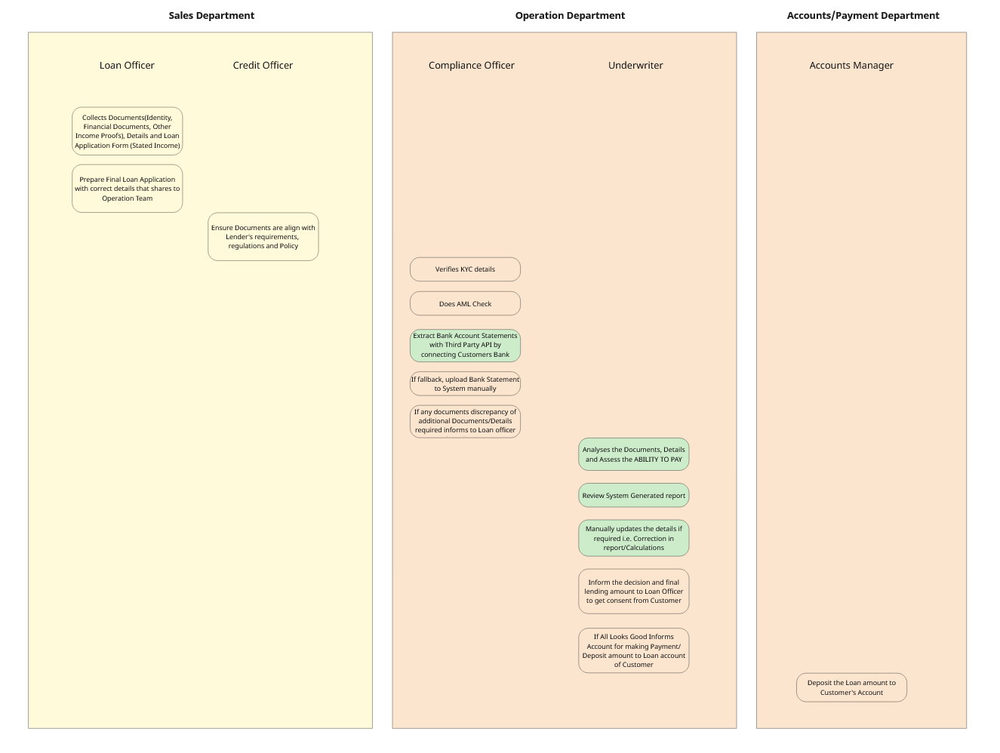

LOANX — Income verification system
Requirements specification for automated income verification from Bank transactions
(PSD2 bank connect + manual upload fallback).
Lean Canvas - Business Case

- Goal: automate income verification to speed up loan decisioning and reduce manual workload by ≥60%.
- Primary method: analyse bank transactions via PSD2 API connection; manual upload as fallback.
High-Level End to End Process Flow
Internal Application flow without access to customer

Web Application for Customer to fill application and upload Documents

Business requirements
- BR1 — Integrate a PSD2-compliant third-party provider so applicants can securely connect bank accounts.
- BR2 — Provide manual upload fallback (PDF, DOC, XLS/XLSX) but drive adoption of automated flow.
- BR3 — Automate income verification: analyse transactions to verify stated income and pre-fill income fields.
- BR4 — Must be secure, trustworthy, and reduce manual ops workload by at least 60% for new applications.
Stakeholders
Primary roles
- Applicant — Connect bank(s) or upload statements.
- Compliance Officer — Review uploads & extracted data; trigger bank connections (with consent).
- Underwriter — Review income analysis, anomalies, and take include/exclude/report actions.
Project Scope
In Scope
- Income analysis through bank statements only.
- Region: Italy (GDPR & Italian retention rules apply).
Out Scope
- Income Analysis through other income sources, OTP registration step and new loan creation flow.
Epic
Automated Income Verification from the Bank transactions for Faster & Accurate Loan Decisions
As a Loan Operation User,
I want to securely and automatically verify customer’s income by connecting his/her bank account and view automated analysis report of bank transactions
So that I can get a faster, more reliable loan and accurate decision with minimum manual interventions
User stories
US1 — Loan Applicant connects bank (PSD2 API)
User Story
As a Loan Applicant
want to connect my banks to LoanX System
So that I can share correct and real-time bank transactions history to expedite my loan process and reduce manual efforts.
Acceptance Criteria
- When Applicant registered using the Create Loan form, the consent pop-up opens that contains to connect to bank account and
to store the data in LoanX system. It shall contain all the terms, conditions and details about data security as per GDPR guidelines.
- When Applicant give consent, the page shall direct to Connect to bank screen.
- When applicant click on ‘Connect to Bank’ button, on next screen all Banks shall be listed. Refer select bank screen.
- When user select the Bank, the Bank transaction shall be captured and displayed on screen. This read only transaction data shall be visible to Applicant, Compliance Officer and Underwriter. Refer Bank Transaction History screen.
- The guidelines to categorize bank statement is here.
- Applicant can connect to multiple bank account by clicking on button ‘Connect to Bank’ on Bank Transaction History page. When clicked on the button, page shall redirect to Refer Select bank screen.
- Any API connection failure shall trigger a fallback option to manual upload, with clear error messages.
- If at any step there is error occur due to network/server issue/Technical issue/other, the relevant Error message shall be displayed.
- System shall allow applicants to securely connect to their bank using a PSD2-compliant API provider (Plaid).
- Strong Customer Authentication (SCA) shall be enforced during the bank connection process (2FA or OTP).
- Customer consent must be explicitly captured, logged, and stored for audit.
- Retrieved bank transactions must be encrypted in transit (TLS 1.3) and at rest (AES-256).
- Data retention shall follow GDPR rules: stored only for the loan lifecycle and deleted within 30 days of rejection/withdrawal.
- System shall support storing transaction history from multiple bank accounts under one applicant ID.
- Any API connection failure shall trigger a fallback option to manual upload, with clear error messages.
- Audit logs shall record connection attempts, data retrieval, and consent status.
- The Screen designs and flow can be referred at 1. Connect to bank screen. 2. Select bank screen. 3. Bank Transaction History.
US2 — Loan Applicant uploads bank statement
User story
As a Loan Applicant
I want to upload my bank statement to LoanX System
So that I can share correct transaction history securely to expedite my loan process.
Acceptance Criteria
- When Applicant registered using the Create Loan form, the consent pop-up opens that contains to connect to bank account and to store the data in LoanX system. It shall contain all the terms, conditions and details about data security as per GDPR guidelines.
- When Applicant give consent, the page shall direct to Connect to bank screen.
- When applicant click on ‘Upload Bank Statement’ button.
- Applicants shall be able to upload bank statements in PDF, DOC, XLS, XLSX formats.
- System shall tag uploaded documents with who uploaded, when, and for which customer (audit).
- The files size must be less than 5 MB.
- Uploaded files shall be virus-scanned before storage.
- Applicant must receive confirmation once upload is complete and data is processed.
- On success, extracted income data shall automatically pre-fill into the income analysis system & shall be directed to Bank Transaction History.
- The guidelines to categorize bank statement is here .
- Applicant can upload multiple Bank statements by clicking on button ‘Connect to Bank’ on Bank Transaction History . When clicked on the button, page shall redirect to Refer select bank screen.
- Files shall be encrypted at rest (AES-256) and access-controlled.
- Uploaded documents shall be retained only for regulatory purposes (max 10 years for AML, or as per Italian law).
- GDPR-compliant consent for document storage must be captured.
- The captured transactions can be categorized and analysed by system based on algorithm for income analysis.
- If File format is not supported, File size is large, or data cannot be extracted from the file the relevant error message shall be displayed.
- the transaction is already present in the system and user tries to upload the file multiple times, transactions must not be duplicated.
US3 — Compliance Officer connects customer’s bank
User story
As a Compliance Officer
I want to connect customer’s bank to LoanX System
So that I can extract correct and real-time bank transactions history to expedite their loan process and reduce manual efforts.
Acceptance Criteria
- Compliance Officer shall be able to trigger a bank connection using customer consent and PSD2 API.
- System shall restrict this function to authorized Compliance users only (role-based access).
- Strong Customer Authentication must still be performed by the customer, even when initiated by Compliance.
- System shall tag uploaded documents with who uploaded, when, and for which customer (audit).
- Retrieved data must be encrypted and logged for audit.
- Consent validity and expiry must be checked before reusing stored consents.
- Compliance Officer must see a confirmation once connection is successful.
US4 — Compliance Officer uploads customer’s bank statement
User story
As a Compliance Officer
I want to upload bank statement of customer to LoanX System
So that I can extract correct transaction history securely to expedite my loan process.
US5 — Compliance Officer refreshes customer’s transaction history
User story
As a Compliance Officer
I want to refresh transaction history of customer’s connected bank account
So that I can review real-time and accurate data.
US6 — Underwriter reviews income analysis report
User story
As a Underwriter
I want to review Income Analysis report generated by system based on transaction history
So that I can verify customer’s Net Income against the stated income.
Acceptance Criteria
- When clicked on “Assess the Risk” button, the ‘Bank Accounts transaction Analysis Report’ shall be displayed (provided that no Anomaly transactions found or Anomaly transactions either excluded or included in income calculation with no reported transaction)
- If anomaly transactions found, reports shall not be generated and the screen directed to Anomaly Transaction Listing
- All Income analysis fields shall be saved in database along with audit logs:
- Monthly Gross income and Net Income for each month.
- Yearly Gross Income and Net Income for available years.
- Score. Rating (Score) logic can be found in underwriting guidelines
- Report Summary
- Report shall show breakdown in following sections:
- Stated Income: It is filled by applicant in application form
- Report Visual Representation: (Score from 0 to 100 divide the scale likewise to place the arrow)
- Poor: For Score 0 to 20
- Below Average: For Score 21 to 40
- Fair: For Score 41 to 60
- Good: For Score 61 to 80
- Excellent: For Score 81 to 100
- Monthly Net and Gross Income for 6 months – Refer to underwriting guidelines to calculate income.
- Last 2 years Net and Gross Income – Refer to underwriting guidelines to calculate income.
- Report Summary: Based on Score the Summary shall be stored to database and shall be displayed to report.
- Please refer to screen design for Bank Transaction History Analysis Report. .
- Report must be accessible only to authorized Underwriters.
- Underwriter must be able to download/print for audit purposes.
- All views/downloads must be logged.
US7 — Underwriter views Anomaly Transactions
User story
As a Underwriter
I want to view Anomaly transactions
So that I can review to assess the risk.
Acceptance Criteria
- When clicked on 'Assess Risk Button' the Anomaly transactions shall be displayed, if any found.
- The logic/criteria for anomaly detection shall be configurable by Risk team, please refer anomaly transactions underwriting guidelinesUnderwriting guidelines.
- System shall flag anomalies (irregular deposits, large cash inflows, inconsistent income).
- Anomalies must be visually distinguished in the underwriting dashboard.
- System shall allow filtering anomalies by Bank Name, Account type, Transaction category.
- Audit trail shall record all anomalies flagged for a given customer.
- Please refer to Anomaly Transaction History screen design.
- The Button shall be provided for each Anomaly transaction to Exclude transaction from Income calculation with No Risk, to Exclude transaction from Income Calculation with Risk, to Include transaction to Income Calculation.
- All Anomaly transactions shall be saved in the database along with reason/category of risk and audits.
- Underwriter ID, Timestamp, Transaction ID, Action taken (Include/Exclude/Report Risk), Attached documents and comments
- Audit Logs must be immutable and accessible to Compliance Officers for review
- “Assess Risk” Button Shall not be enabled unless all Anomaly transactions are cleared with above actions.
- When clicked on ‘Assess the Risk’ the Bank Transactions Analysis Report shall be generated and saved.
US8 — Underwriter excludes anomaly as “No Risk”
User story
As a Underwriter
I want to exclude Anomaly transactions
So that I can manually improve the income analysis process and mark the transaction as NO RISK.
Acceptance Criteria
- Underwriter must be able to manually mark anomaly as “No Risk.” By using link ‘Exclude’ on the anomaly transaction listing page.
- When clicked on the link pop-up opens to submit comment/justification and supporting documents. The document must be in doc, pdf, excel format with maximum size 2 mb.
- Supporting documents must be encrypted at rest (AES-256) and in transit (TLS 1.2+).
- Data retention rules: keep only as long as legally required (e.g., 10 years in Italy for financial records).
- Refer to below form:
- When clicked on ‘Exclude’ button of pop-up window, the system shall log who excluded anomaly, when, comments and documents.
- Underwriter ID, Timestamp, Transaction ID, Action taken (Exclude), Attached documents and comments
- Once excluded, anomaly must not affect income analysis. But the corresponding transaction must not be considered for income calculation.
- Compliance team must have read-only access to these decisions for audits.
- Refer to Anomaly Transaction History screen design .

US9 — Underwriter excludes anomaly and reports AML risk
User story
As a Underwriter
I want to exclude Anomaly transactions
So that I can manually improve the income analysis process and report the AML Risk to compliance officer.
Acceptance Criteria
- Underwriter must be able to manually report anomaly transaction by using link ‘Report Transaction’ on the anomaly transaction listing page.
- When clicked on the link pop-up opens to submit comment/justification and supporting documents. The document must be in doc, pdf, excel format with maximum size 2 mb.
- Supporting documents must be encrypted at rest (AES-256) and in transit (TLS 1.2+).
- Data retention rules: keep only as long as legally required (e.g., 10 years in Italy for financial records).
- Refer to below form:
- When clicked on ‘Report’ button of pop-up window:
- The system shall log who reported anomaly, when, comments and documents.
- Underwriter ID, Timestamp, Transaction ID, Action taken (Report Risk), Attached documents and comments
- The email to Compliance officer and Loan officer will be sent with the details:
- Link to loan application in the system that is accessible on click with secured login.
- Underwriter Name
- Customer Name
- Business Name
- Reason/s for Anomaly found
- The Transaction History Report must not be generated.
- Compliance can take further action to close the loan file with report it to Government body. Or at exception on basis of supporting document, Compliance can ask underwriter to take Exclude/Include action. – this flow is not considered right now for implementation

US10 — Underwriter includes anomaly with supporting document for consider Income
User story
As a Underwriter
I want to include Anomaly transactions
So that I can I can manually improve the income analysis process with supporting document and comment.
Acceptance Criteria
- The system must allow the Underwriter to select a flagged anomaly transaction and reclassify it as an “Included Exception.” Using link ‘Include’ on the anomaly transaction listing page.
- When clicked on the link pop-up opens to submit comment/justification and supporting documents. The document must be in doc, pdf, excel format with maximum size 2 mb. 3. The system must require the Underwriter to upload at least one supporting document (e.g., pay stub, contract, invoice, tax return, or employer confirmation letter) to validate why the transaction is an exception.
- Supporting documents must be encrypted at rest (AES-256) and in transit (TLS 1.2+).
- Data retention rules: keep only as long as legally required (e.g., 10 years in Italy for financial records).
- Refer to below form:
- When clicked on ‘Include’ button of pop-up window, the system shall log who included anomaly, when, comments and documents.
- Underwriter ID, Timestamp, Transaction ID, Action taken (Include), Attached documents and comments.
- Once Included, income calculation engine shall consider the amount for income calculation.
- Compliance team must have read-only access to these decisions for audits.

Prototypes
Create New Loan

Loan Listing for Customers

Connect to Bank

Select Bank

Bank Transaction History

View Anomaly Transactions to take Action

Transaction history analysis Report

Bank transaction categorization
Bank Statement Listing fields
Mandatory bank statement fields:
transaction ID, date, amount, currency, description, account ID, counterparty.
Normalization:
Standardize transaction formats, unify credit/debit labeling across banks.
Multi-account Mapping:
Support multiple business accounts under a single legal entity.
Revenue / Income categories (examples)
| Category | Example/ keywords/ patterns | Logic/Rules | Notes |
|---|---|---|---|
| Sales Revenue | INVOICE, CUSTOMER_NAME | Recurring deposits matching issued invoices | Monthly or irregular revenue tracked separately |
| Service Income | CONTRACT, SERVICE | Credits from clients for services rendered | Use invoice matching if available |
| Government Grants/ Subsidies | GRANT, SUBSIDY | Regular or one-time inflows from government | Track separately for compliance |
| Refunds /Adjustments | CREDIT NOTE, RETURN,TRANSFER FROM SISTER COMPANY/BUSINESS | Separate from true income | Excluded from net revenue |
Expense categories
| Category | Example/keywords | Logic/Rules | Notes |
|---|---|---|---|
| Payroll / Salaries | PAYROLL, SALARY | Monthly recurring debits to employees | Exclude owner equity draws |
| Taxes | TAX, VAT, INPS | Mandatory outgoing payments | Needed for cash flow and DTI ratio |
| Operating Expenses | RENT, UTILITIES | Recurring operational expenses | For cash flow modelling |
| Loan / Debt Payments | CREDIT LINE, LOAN | Debt servicing payments | Used for debt-to-income calculation |
| Vendor Payments | SUPPLIER_NAME,INVOICE | Supplier payments for goods/services | Track timing & amounts |
Risk / Anomaly categories
| Category | Example/keywords | Logic/Rules | Notes |
|---|---|---|---|
| Large One-Off Transfers | > Configured Threshold | Unexpected inflows or outflows | Flag for AML / fraud review |
| Cross-Border / FX Transactions | Foreign IBAN, SWIFT transfers | Flag for AML / FX exposure | Check source legitimacy |
| Irregular Payroll or Bonus Payments | Off-cycle payments | Detect non-recurring spikes | Underwriter review |
| Cash Withdrawals | ATM, CASH | High-volume cash withdrawals flagged | AML monitoring |
Income calculation
Formulas described in the spec:
- Gross Income = sum of all valid income items (per period).
- Net Income = Gross Income − Expenses.
- Annual Gross/Net Income for calendar year (1 Jan – 31 Dec).
-
Monthly average Income
- Average gross monthly Income = Annual Gross Income / 12
- Average net monthly Income = Annual Net Income / 12
Security, consent & retention
- All consent captured & logged (GDPR Art. 7).
- Encryption: TLS 1.3 in transit; AES-256 at rest.
- File virus scanning and size limits (uploads ≤ 5 MB; support docs for anomalies ≤ 2 MB).
- Retention: transaction data only for loan lifecycle; delete within 30 days of rejection/withdrawal; documents retained up to regulatory timeframe (e.g., 10 years for AML or as per Italian law).
- Audit logs: connection attempts, retrievals, views, downloads, and anomaly actions (immutable, read-only for compliance where required).
Risks
- Tech risk: Third-party provider reliability, schema changes, downtime.
- Underwriting risk: Changes to income calculation rules or new fraud scenarios requiring rule updates.
- Legal/compliance: Evolving laws around storing/transferring financial/personal data.